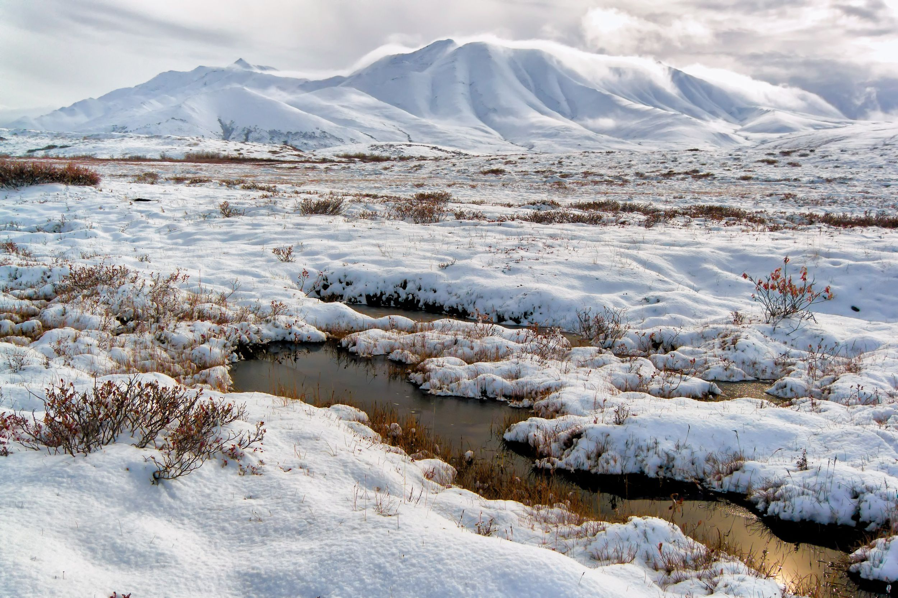

Características
A Tundra apresenta temperaturas muito baixas, ventos intensos e vegetação rasteira composta principalmente por musgos e líquens.
Clima
O inverno é extremamente rigoroso e o verão é curto e frio.
Voltar para Biomas

Um dos biomas mais frios do planeta, localizado próximo às regiões polares.
A Tundra apresenta temperaturas muito baixas, ventos intensos e vegetação rasteira composta principalmente por musgos e líquens.
O inverno é extremamente rigoroso e o verão é curto e frio.